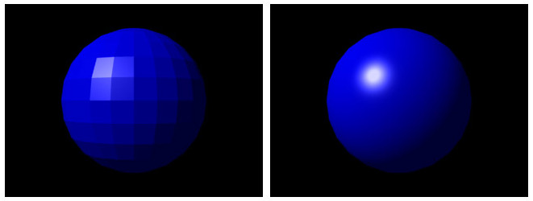
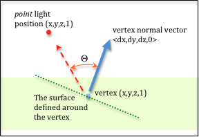
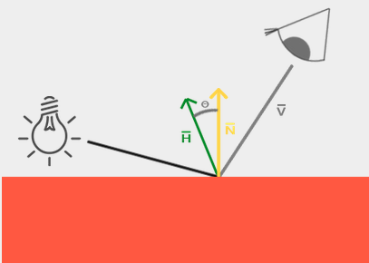

Table of Contents
/It wasn't obvious to me at first blush how the halfway vector took the expression that it did and I couldn't find a clear derivation anywhere (Not explained on wikipedia, Peter Shirley's Fundamentals of Computer Graphics (4th edition), or Real Time Rendering (3rd edition), clearly too trivial for the wizard beards./
Motivation (Why this?)
Historically in graphics, various interpolation lighting models were used to produce continuous shading of surfaces represented by data associated with polygonal meshes.
By lighting model I mean a simplified, non-conserving, "bidirectional reflectance model" (really a smart hueristic) that just uses the vertex's normal, a light and viewing direction.
Each traditional shading model is named after its inventor.
If the data of each vertex, the corners of each triangle, are interpolated (vertex to vertex, done in a vertex shader) then it's said to be Gouraud shading. If the pixel values between vertices are interpolated (pixel to pixel, done in a fragment shader) then it's said to be Phong shading.

Figure 1: Gouraud versus Phong shading, from wikipedia
This is accomplished by the internal interpolation that happens in a "varying"/ "in"/ "SVPOSITION" variables associated with this vertex.
This gives a discrete vertex normal that was piped in from the vertex shader a continuous smearing of normals, "fragment" to "fragment", in a fragment shader. 1.

Figure 2: Interpolated intermediate vertex normals (diagram from learnwebgl.brown37.net)
This can then be normalized and dotted with the viewing direction to find a diffuse shading weight.

Figure 3: Diffuse Lighting Heuristic Diagram (diagram from learnwebgl.brown37.net)
An associated reflection vector can be found as described in
There are also hardware accelerated functions in modern shading languages for finding the reflection vector, e.g. reflect() in glsl.
This works well for diffuse lighting as the dot product between the normal and viewing vectors will only be ever deal with angles of 90 degrees / \(\frac{\pi}{2}\) or less, but this is not the case for the reflection vector.

Figure 4: The reflection vector can fail (diagram from learnOpenGL.com)
This is why the "halfway vector" was introduced by Jim Blinn as an extension of the Phong Model -> Blinn-Phong lighting model.
Mathematically, the halfway vector is nothing more than an angle bisector vector with normalized components, but really it's a mapping of how oblique or aligned with the reflection vector the viewing angle is to the normal, thus recovering a better approximation/ hueristic for specular lighting.

Figure 5: The Halfway Vector (diagram from learnOpenGL.com)
Derivation
For two vectors (light direction and and viewing vector) \(\vec l\) & \(\vec v\) the bisecting vector between them is: \(\lvert \vec v \rvert \vec l + \lvert \vec l \rvert \vec v\)
See the article for Vector angle bisector for a derivation of this expression.
If both vectors have both been normalized then this reduces to: \(\vec v + \vec l\)
The halfway vector as presented in literature is just the unit version of this vector:
\[\vec H = \frac{\vec v + \vec l}{\lvert \vec v + \vec l \rvert}\]
Footnotes:
Fragment is a loaded word and concisely said is just what is ultimately not culled or discarded by a number of pipeline processes outside the scope of this blog post